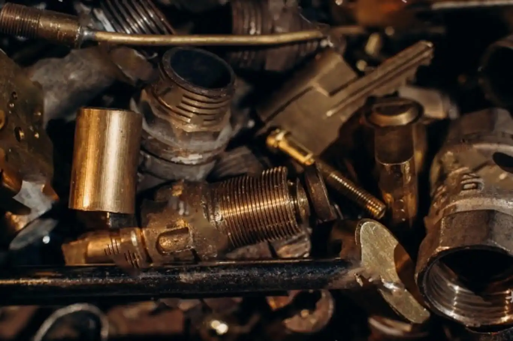
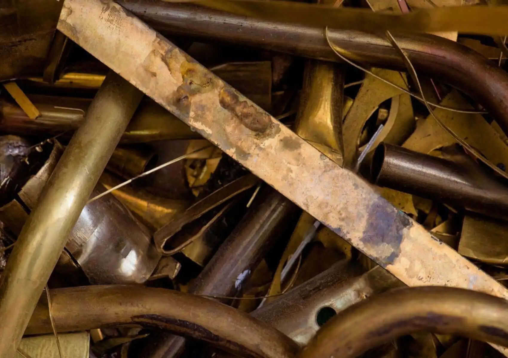

Сдать латуннный лом

Экологическая и экономическая выгода переработки
Латунь — это медно-цинковый сплав, который имеет различные оттенки в зависимости от содержания цинка.
Она входит в тройку наиболее распространенных медных сплавов вместе с бронзой. Латунь очень популярна в промышленности благодаря своим свойствам, таким как отличная термическая проводимость и устойчивость к коррозии.
Где находится латунь?
Где находится латунь?
Как получить максимальную выгоду при сдаче латунного лома в Харькове
Прием латуни является важным шагом в переработке этого металла.
В городе Харькове существует множество специализированных пунктов приема латунного лома, которые предлагают услуги по приему, оценке и покупке этого металла.
При сдаче латунного лома в Харькове необходимо учитывать, что цена на латунь может существенно варьироваться в зависимости от состояния и качества материала. Поэтому перед сдачей лома рекомендуется произвести его визуальный осмотр, чтобы определить состояние металла.
Прием латуни в Харькове осуществляется по договоренности с металлобазой. Некоторые пункты приема могут предоставлять услуги по вывозу латунного лома с места хранения клиента. При этом необходимо согласовать дату и время вывоза сотрудниками пункта приема.
Безопасный прием латунного лома
Как избежать мошенничества при сдаче металлолома.
Латунь является ценным материалом, который широко используется в различных областях промышленности и производства. Поэтому сдача латунного лома является не только выгодным, но и экологически правильным решением, так как этот металл может быть переработан и использован повторно.
Важно учесть, что цена на лом латуни может меняться не только в зависимости от состояния материала, но и от общей ситуации на рынке.
- Например, мировые цены на металлы могут влиять на цену латуни в Украине. Поэтому, если у вас есть лом латуни, то рекомендуется следить за изменением цен
- яна металлолом и выбирать время для продажи, когда цена находится на высоком уровне.
- Кроме того, перед тем, как сдавать латунь, рекомендуется проверить репутацию и опытность компании, чтобы не столкнуться с мошенническими схемами.
Формирование цены на латунь: особенности сплавов и рынка.
Формирование цены на латунь: особенности сплавов и рынка.
- Вообще, цена на латунь формируется на основе цены на медь, так как медь является одним из главных компонентов латуни. Однако, цена на латунь может меняться в зависимости от состава сплава, так как различные компоненты могут иметь разную стоимость и влиять на свойства латуни. Например, добавление цинка в сплав может увеличить прочность и твердость латуни, но также может повлиять на ее коррозионную стойкость.
- Цена на латунь также может зависеть от спроса и предложения на рынке. Если спрос на латунь высокий, то цена на нее может подняться, а если спрос низкий, то цена может снизиться. Важно отметить, что цена на лом латуни может быть ниже цены на чистую латунь, так как при переработке лома может потребоваться дополнительная работа по очистке и сортировке материала.
Выгодно реализуйте лом латуни с компанией «Вторчермет»
В целом, для получения наилучшей цены на латунь рекомендуется обратиться к проверенным дилерам цветных металлов, которые могут предложить конкурентные цены на основе текущей ситуации на рынке.
Для реализации лома латуни с максимальной выгодой можно обратиться в пункты приема компании «Вторчемет». Благодаря многолетнему опыту работы с этим металлом, наша компания предлагает высокую цену за его сдачу.
- В ходе процедуры оценки наши профессиональные сотрудники учтут качество латуни и рассчитают ее стоимость.
- Сдача латуни в «Вторчемет» не требует от Вас затрат времени и денег на транспортировку металла до нашей компании, так как мы предлагаем доставку лома по всей Украине.
- Наши специалисты гарантируют надежность и высокое качество транзакции.
- Все процедуры проходят быстро и безопасно.
- У нас самые выгодные условия реализации лома латуни и максимальная стоимость.
Реализуйте латунь с максимальной выгодой в нашей компании. Важно отметить, что цены на прием лома могут меняться в зависимости от текущей ситуации на рынке, состояния материала и объема сдачи. Поэтому, перед сдачей лома, рекомендуется уточнять цены в компании "Вторчемет".
Цены на прием лома металлов в компании "Вторчермет"
- Лом бронзы - принимается по цене 180 грн/кг. Бронза является ценным металлом, который используется в различных отраслях, включая производство музыкальных инструментов, статуй и монет. Цена на лом бронзы зависит от состояния материала, его качества и ситуации на рынке.
- Латунь - принимается по цене 170 грн/кг. Латунь - это сплав меди и цинка, который широко используется в производстве различных изделий, включая гильзы, трубы, фитинги, замки и многие другие. Цена на латунь зависит от ее качества и состояния.
- Латунная стружка - принимается по цене 130 грн/кг. Латунная стружка - это отходы от обработки латуни, которые могут быть переработаны и использованы в других производствах. Цена на латунную стружку зависит от объема и качества материала.
- Радиаторы - принимаются по цене 100 грн/кг. Радиаторы являются частями системы отопления, которые могут содержать латунные элементы. Цена на радиаторы зависит от их состояния, размера и материала, из которого они изготовлены.